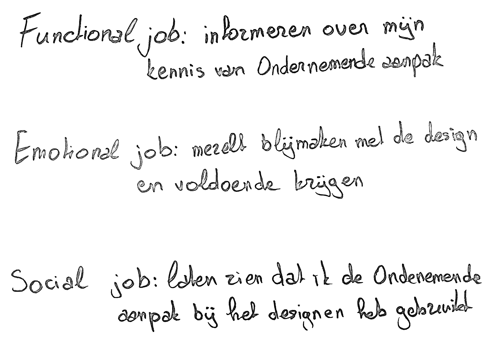

BETROKKEN
Om de Betrokken aanpak te tonen op de pagina, heb ik gekozen voor twee waarden: informeren en betrokkenheid. Bij informeren ligt de nadruk op onderzoek en het delen van veel tekst en inzichten. Betrokkenheid benadrukt dat ik zelf deel uitmaak van de doelgroep, waardoor mijn eigen designperspectief een centrale rol speelt in het proces. Deze aanpak combineert rationele analyse met persoonlijke betrokkenheid.
AANPAK
ONDERNEMENDE
AANPAK
Voor de Ondernemende aanpak heb ik mezelf uitgedaagd door de pagina te ontwerpen met het archetype dat het minst dominant was in mijn testresultaten: The Rebel (35%) samen met een van mijn hoogste resultaat: The Lover (90%). Dit betekende experimenteren met onconventionele ideeën, opvallende visuele elementen en een gedurfde stijl. Door deze aanpak heb ik niet alleen mijn creativiteit getest, maar ook ontdekt hoe een rebelse benadering een unieke en krachtige branding kan opleveren.
AANPAK
KEUZE
Na mijn ervaringen met beide aanpakken merk ik dat de Betrokken aanpak me iets meer aanspreekt. Het proces van waarden en perspectieven verkennen, en het gebruik van Critical Making, voelde betekenisvoller en creatiever. Het dwong me om breder te denken en met complexe ideeën te werken.
De Ondernemende aanpak vond ik echter ook interessant, vooral door de praktische tools zoals Jung’s Archetypes en de focus op het oplossen van specifieke problemen. Deze aanpak voelt doelgericht en gestructureerd, wat me hielp om duidelijke keuzes te maken.
In de toekomst wil ik de Betrokken aanpak blijven gebruiken vanwege de diepgang en het creatieve proces, maar ik wil ook elementen van de Ondernemende aanpak combineren. Het valideren van ideeën en het toepassen van frameworks zoals Jobs to Be Done zijn waardevolle toevoegingen. Door de kracht van beide aanpakken te combineren, hoop ik mijn projecten naar een hoger niveau te tillen.